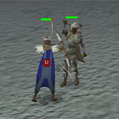

Stealing Creation
Introduction | Location | Requirements | Recommended Items
Using Sacred Clay | Fighting with Clay | Winning the Game
Rewards | Development Team
Using Sacred Clay | Fighting with Clay | Winning the Game
Rewards | Development Team
Stealing Creation is only accessible to RuneScape Members. Please subscribe to get this feature.
Please note this is a 'Safe' minigame. On the other hand, as all equipment you can carry is made during the game, you will drop all items when you die, and no gravestone will protect them. You can use the Protect Item prayer to retain one item as normal.
Introduction

One of these bizarre features is a portal to a plane composed solely of 'sacred clay', the stuff of creation itself. It is likely that, in the earliest times of the universe, the gods themselves fashioned their followers from this clay, not to mention all manner of beasts, rocks and plants. Living and unliving, all things were first formed from this strange substance.
A group of mystics have found this portal and stabilised it enough to secure a way through to that Primordial Realm, but they need bold adventurers to go forth and battle for it so that it can be properly imbued for their dubious purposes...
Location

Alternatively, you might enjoy a brisk walk through the lower reaches of the Wilderness from either Edgeville or Varrock.
In any case, it is possible to be attacked by revenants while crossing the Wilderness, so you should beware of the danger and pack any valuables safely in your bank before attempting the journey.
Requirements
There are no specific requirements to play Stealing Creation - regardless of your levels, you can help your team be victorious! Of course, because this is a skill- and combat-based minigame, having higher levels across a number of skills will be advantageous.
Note that you will not earn any experience for anything you do in a game of Stealing Creation.
Recommended Items
You cannot take any items into Stealing Creation, so there is no need to prepare any equipment.
Using Sacred Clay
The quickest and easiest way to begin playing Stealing Creation is to talk to the Head Mystic, who will explain how it works, following which you can simply jump into one of the fenced-off waiting areas to begin playing in a free-for-all match. While you are waiting, you'll see a small interface indicating how many combat and skill levels each team has.
If you are in a clan and wish to challenge another clan, you can do so using the larger waiting area. Whichever member of the clan enters this area first will be designated the clan leader and can issue challenges or offer alliances to other clan leaders in the area. If you are a clan leader, right-clicking on another leader will allow you to choose 'Challenge' or 'Ally'. To accept an alliance, right-click the person who has offered it and select 'Ally'. Up to three clans can be allied on each side.
After a short wait and assuming there are enough people to play, you will be transported to the Primordial Realm to begin the struggle.

When you're ready, you can click on one of the portals to get out there and cause some havoc (or gather clay, or make equipment, or steal your opponents' stuff, or...).

 Your main objective is to gather clay, which you can either store in its raw form in your team's base (by using it on a table or sending it back with a familiar) or convert into useful equipment or weaponry using the kilns you can find in the area. There are a number of ways to gather the sacred clay, but to start with you will have to pick up clay fragments, so that you can then construct tools to harvest from other, better sources.
Your main objective is to gather clay, which you can either store in its raw form in your team's base (by using it on a table or sending it back with a familiar) or convert into useful equipment or weaponry using the kilns you can find in the area. There are a number of ways to gather the sacred clay, but to start with you will have to pick up clay fragments, so that you can then construct tools to harvest from other, better sources.
Because clay fragments are only ever class 1, you do not need any specific levels to collect it.

- Class 1 clay can only be used to make class 1 items. Higher classes will make the highest level of equipment you are able to make, as long as the clay is good enough (e.g. class 3 clay can make up to class 3 items). class 5 clay will always make the highest class of equipment you are able to make.
- Each class of equipment has a level requirement: class 1 can be used by anyone of any level; class 2 requires level 20 in the relevant skill (Mining for a pickaxe, Magic for mage robes, and so on); class 3 requires level 40; class 4 requires level 60; class 5 requires level 80.

Assuming you have the clay and an appropriate skill level to make the item with that clay, you will be rewarded with a new item in your inventory.
To begin with, it's probably a good idea to make equipment for gathering better clay, and possibly some barriers to protect resources from your enemy. There are four types of tool, each of which can be used on a specific type of clay resource:

|

|

|

|
|||
| Pickaxe (Mining) |
Hatchet (Woodcutting) |
Harpoon (Fishing) |
Butterfly net (Hunter) |
In addition to having the correct tool, you require the following levels to gather these resources depending on the quality of the clay:
- Class 1 clay can be gathered by anyone
- Class 2 clay requires level 20 in the relevant skill
- Class 3 clay requires level 40 in the relevant skill
- Class 4 clay requires level 60 in the relevant skill
- Class 5 clay requires level 80 in the relevant skill
 Sacred clay can also be made into weapons, armour, food and potions. To read more about the different types of weapons and armour available, click here.
Sacred clay can also be made into weapons, armour, food and potions. To read more about the different types of weapons and armour available, click here.
The amount that food heals depends on the quality of the clay it is made from, as you might expect.
- Class 1 food will heal 4 Hitpoints
- Class 2 food will heal 8 Hitpoints
- Class 3 food will heal 12 Hitpoints
- Class 4 food will heal 16 Hitpoints
- Class 5 food will heal 20 Hitpoints
In the same way, the number of doses of a potion is dictated by the quality of the clay, so a class one clay fragment will provide a single dose of a potion, while class 5 clay will supply you with a potion containing 5 doses.
Fighting with Clay
With all of your equipment ready or on its way, you should begin thinking about how to win the game. As stated earlier, the object of the game is to gather clay. Any clay you gather, as well as equipment constructed from it, can be stored in your base by clicking the central table, which will automatically distribute it to a selection of other tables. You can take items from these tables if you do not have the skill requirements to make them yourself, but this will reduce your individual score.

Securing Resources
In addition to collecting clay, your team will be scored according to how many of the resources you control. To control a resource, you must construct barriers around it, which can be made in a creation kiln. You need four barriers to control a resource, which require a Construction level to make and to place.When you have erected barriers around a resource, only players from your own team will be able to access it, although enemy warriors can attack it to break down the walls. Conversely, you can repair the walls as your foes are attempting to destroy it. Higher class barriers can take more damage before they are destroyed.

Combat
Because there are no restrictions on combat in the Primordial Realm (other than the fact that you cannot attack members of your own team), many adventurers enjoy taking the battle more seriously by attacking their enemies as they gather resources, build items, and so on. This is also a good way of gathering clay, as any foes you defeat will drop all of their items (unless they have a Protect Item prayer active), which you can pick up and return to the tables in your base.There are no level restrictions on combat: it is entirely possible for a level 138 combat monster to pick on a level 10 skiller! To read more about the awesome combat equipment you can wear and wield in Stealing Creation, click here.
Note that if you die, you will respawn either at your base or the nearest resource your team controls.

Pickpocketing
If direct combat isn't your thing, you'll be pleased to note that the strange atmosphere in the Primordial Realm dulls everyone's senses just enough that those with a more fluid concept of property rights can take advantage of. Although it may be obvious what you're doing, if you are careful and choose your targets wisely, you may be able to make a significant impact on your opponents' ability to gather or retain clay.You need to have a Thieving level no less than 20 levels below your target's (so you'd need at least 79 to pick someone's pockets if they have level 99). To pickpocket from someone, right-click on them and select 'Pickpocket'. If you are successful and they have any items in their inventory, you will discover yourself to be a little heavier, and them a little lighter.

Fog Banks
Cunning and devious players may enjoy hiding and waiting to ambush their foes as they rush about gathering clay, pickpocketing from unsuspecting foes or chasing people down with a nasty scimitar. The fog banks found in the Primordial Realm are the ideal place to hide, as you become entirely invisible to everyone else while you are in them - you won't even show up on the minimap.To hide in a fog bank, simply walk/run into it. Note that you cannot shoot, cast spells or summon familiars from within a fog bank.

Altars
In a frantic and fast-paced game like Stealing Creation, it's no surprise that you might need to top up your Prayer points as you go. If you are lucky enough to find yourself in a part of the Primordial Realm that features these altars, you'll discover that they not only restore your Prayer points, but also your run energy and Summoning points, all at once!If you do not have access to an altar (either because there are none in your area or because they are blocked from you with barriers), you will have to suffice with the potions that can be made at the creation kilns.

Summoning Familiars
Even in the Primordial Realm you can create pouches to summon beasts made of the same clay as everything else. These automatons behave in much the same way as other Summoning familiars, in that they have a number of abilities and you can also make scrolls to activate their 'Clay Deposit' special move.The clay familiars are a beast of burden (able to carry 1, 6, 12, 18 or 24 items, depending on the clay used to make the pouch) with a range of combat levels (25, 37, 58, 93 or 139, depending on quality) and will remain for the whole game unless they are slain. They can also use the 'Clay Deposit' special move to send clay or items in their inventory to your base.
Winning the Game
As you perform actions throughout Stealing Creation, you will see your score in the top-left of your screen increase. Almost everything you do while in the Primordial Realm will generate these points except taking items from the tables in your base, which will reduce your points. Your individual score is extremely important, as it is these points that determine how many reward points you earn with which to purchase items at the end of the game.
By increasing your score, you also increase your team's score, which is what wins you the game. At the end, when the teams' scores are compared, each member of the winning team will receive a 10% bonus to their individual scores.
Each game lasts 20 minutes, so you have all that time to gather clay and earn points: use it well!
You will earn or lose points for the following:
| Gathering sacred clay | 15 per class |
| Processing sacred clay | 15 per class |
| Depositing sacred clay | 15 per class |
| Depositing clay items | 30 per class |
| Withdrawing items from your base* | Lose the points you would earn for depositing it |
| Combat | 5 per Hitpoints damage done to enemy |
* If you have 0 points or fewer, you will not be able to withdraw any items.
Rewards
There are a number of rewards available to those who perform well in Stealing Creation, and it would be difficult to say that the mystics are ungrateful...
The score you gain while playing Stealing Creation is converted into Reward Points according to the following scheme:
| Stealing Creation Points | Reward Points |
| 0 - 19,999 points | 1 per 1,000 Stealing Creation Points |
| 20,000 - 21,999 points | 20 |
| 22,000 - 25,999 points | 21 |
| 26,000 - 33,999 points | 22 |
| 34,000 - 49,999 points | 23 |
| 50,000 - 81,999 points | 24 |
| 82,000 - 145,999 points | 25 |
| 146,000+ points | 26 |
You can use these points to purchase sacred clay rewards, or to recharge any items you may already have. All items can be recharged for a flat cost of 20 Reward Points.
Volatile Tool
 The volatile tool is a multi-purpose object that you can command to take a new shape. When you do so, it will randomly turn into one of the following: hatchet, butterfly net, hammer, harpoon, knife, needle or pickaxe. These can be used exactly as you would use a normal tool of their type, but will increase the experience you earn by 120% when you use them. The tool will stay in this shape for a certain number of uses (based on your level in the relevant skill) before disintegrating.
The volatile tool is a multi-purpose object that you can command to take a new shape. When you do so, it will randomly turn into one of the following: hatchet, butterfly net, hammer, harpoon, knife, needle or pickaxe. These can be used exactly as you would use a normal tool of their type, but will increase the experience you earn by 120% when you use them. The tool will stay in this shape for a certain number of uses (based on your level in the relevant skill) before disintegrating.
The tool will transform back to its raw state ten times before it disintegrates. You can check the percentage of experience remaining by right-clicking on it and selecting 'Count-charges'.
Morphic Tool
 The morphic tool is identical to the volatile tool except that you can choose which of the specific tools it will become. You will earn double experience for using it, although it will also return to its natural form after a certain number of uses (based on your level in the relevant skill, but will last a slightly shorter time than the volatile tool).
The morphic tool is identical to the volatile tool except that you can choose which of the specific tools it will become. You will earn double experience for using it, although it will also return to its natural form after a certain number of uses (based on your level in the relevant skill, but will last a slightly shorter time than the volatile tool).
The morphic tool can be transformed into a new shape as much as you like until it runs out of bonus experience, when it will disintegrate. You can check the percentage of experience remaining by right-clicking on it and selecting 'Count-charges'.
Sacred Clay Armour and Weapons
Sacred clay armour is a remarkable construction, the secret of which is known only to the most highly ranked of the mystics. In battle, it can be used to switch combat styles completely, not to mention the fact that it provides excellent combat bonuses, and will double the experience you earn in combat. The experience you earn will slowly degrade the sacred clay items, but it will be spread across all of them, so a full set will last as long as the sum of all of its parts, while two items will last twice as long as one.To change the type of armour/weapon you are using, operate it in your worn inventory or right-click it in your inventory and select 'Transform'. All sacred clay armour/weapons you are wearing or wielding will instantly change to that point of the combat triangle, items in your inventory must be transformed individually.
When your armour or weapon has run out of 'bonus experience', it will retain its combat stats but will no longer provide the extra experience and cannot change form. You can have these items recharged by the mystics to restore them to their malleable, experience-granting state. You can check the percentage of experience remaining by right-clicking the item and selecting 'Count-charges'.
Melee Equipment Statistics
| Item | Levels Required |
||||||||||||||||||
| Attack Bonuses | Defence Bonuses | Other | |||||||||||||||||
![[Image: Stab]](../img/main/kbase/table_text/stab1.gif "Stab") |
![[Image: Slash]](../img/main/kbase/table_text/slash1.gif "Slash") |
![[Image: Crush]](../img/main/kbase/table_text/crush1.gif "Crush") |
![[Image: Magic]](../img/main/kbase/table_text/magic1.gif "Magic") |
![[Image: Range]](../img/main/kbase/table_text/range1.gif "Range") |
|
|
|
|
|
![[Image: Summoning]](../img/main/kbase/table_text/summoning1.gif "Summoning") |
![[Image: Strength]](../img/main/kbase/table_text/strength1.gif "strength") |
![[Image: Prayer]](../img/main/kbase/table_text/prayer1.gif "Prayer") |
|||||||
![[image]](../img/main/kbase/minigames/sc/rewards/melee_platebody.gif) Platebody |
40 |
+ 0 | + 0 | + 0 | - 30 | - 10 | + 82 | + 80 | + 72 | - 6 | + 80 | + 40 | + 0 | + 0 | |||||
![[image]](../img/main/kbase/minigames/sc/rewards/melee_platelegs.gif) Platelegs |
40 |
+ 0 | + 0 | + 0 | - 21 | - 7 | + 51 | + 49 | + 47 | - 4 | + 49 | + 15 | + 0 | + 0 | |||||
![[image]](../img/main/kbase/minigames/sc/rewards/melee_helm.gif) Helmet |
40 |
+ 0 | + 0 | + 0 | - 6 | - 2 | + 30 | + 32 | + 27 | - 1 | + 30 | + 7 | + 0 | + 0 | |||||
![[image]](../img/main/kbase/minigames/sc/rewards/melee_sword.gif) Scimitar |
40 |
+ 7 | + 45 | - 2 | + 0 | + 0 | + 0 | + 1 | + 0 | + 0 | + 0 | + 0 | + 44 | + 0 | |||||
Mage Equipment Statistics
| Item | Levels Required |
||||||||||||||||||
| Attack Bonuses | Defence Bonuses | Other | |||||||||||||||||
|
|
|
|
|
|
|
|
|
|
|
|
|
|||||||
![[image]](../img/main/kbase/minigames/sc/rewards/mage_top.gif) Robe top |
40 40 |
+ 0 | + 0 | + 0 | + 20 | + 0 | + 0 | + 0 | + 0 | + 20 | + 0 | + 20 | + 0 | + 0 | |||||
![[image]](../img/main/kbase/minigames/sc/rewards/mage_skirt.gif) Robe bottom |
40 40 |
+ 0 | + 0 | + 0 | + 15 | + 0 | + 0 | + 0 | + 0 | + 15 | + 0 | + 15 | + 0 | + 0 | |||||
![[image]](../img/main/kbase/minigames/sc/rewards/mage_hat.gif) Hat |
40 40 |
+ 0 | + 0 | + 0 | + 4 | + 0 | + 0 | + 0 | + 0 | + 4 | + 0 | + 4 | + 0 | + 0 | |||||
![[image]](../img/main/kbase/minigames/sc/rewards/mage_staff.gif) Staff |
40 |
+ 10 | - 1 | + 40 | + 10 | + 0 | + 2 | + 3 | + 1 | + 10 | + 0 | + 0 | + 50 | + 0 | |||||
Ranger Equipment Statistics
| Item | Levels Required |
||||||||||||||||||
| Attack Bonuses | Defence Bonuses | Other | |||||||||||||||||
|
|
|
|
|
|
|
|
|
|
|
|
|
|||||||
![[image]](../img/main/kbase/minigames/sc/rewards/ranger_torso.gif) Leather body |
40 40 |
+ 0 | + 0 | + 0 | - 15 | + 15 | + 40 | + 32 | + 45 | + 20 | + 40 | + 40 | + 0 | + 0 | |||||
![[image]](../img/main/kbase/minigames/sc/rewards/ranger_chaps.gif) Chaps |
40 40 |
+ 0 | + 0 | + 0 | - 10 | + 8 | + 22 | + 16 | + 24 | + 8 | + 22 | + 15 | + 0 | + 0 | |||||
![[image]](../img/main/kbase/minigames/sc/rewards/ranger_coif.gif) Coif |
40 40 |
+ 0 | + 0 | + 0 | - 1 | + 2 | + 4 | + 6 | + 8 | + 4 | + 4 | + 5 | + 0 | + 0 | |||||
![[image]](../img/main/kbase/minigames/sc/rewards/ranger_bow.gif) Bow |
40 |
+ 0 | + 0 | + 0 | + 0 | + 47 | + 0 | + 0 | + 0 | + 0 | + 0 | + 0 | + 0 | + 0 | |||||
Development Team
Developers: John A, Rod C, Frédérique M
Graphics: Kavi M, Mark B, Daniel J
QA: Adam D, David S
Audio: Adam B

|
More articles in Minigames
|
|
|
Further Help
If this article does not help you, you may find the following sections of the RuneScape site helpful:
|
|